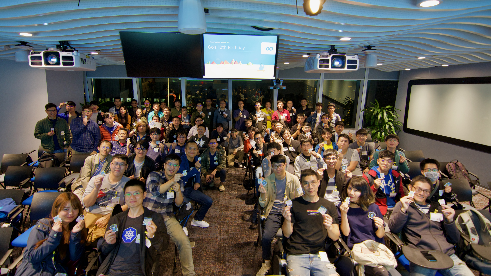
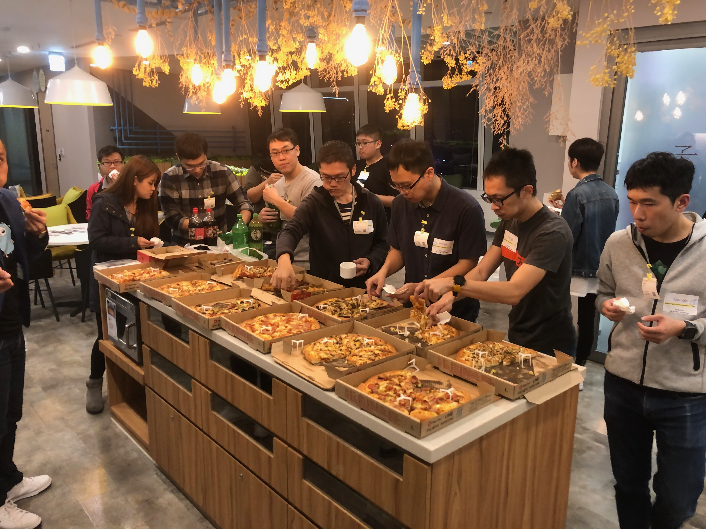
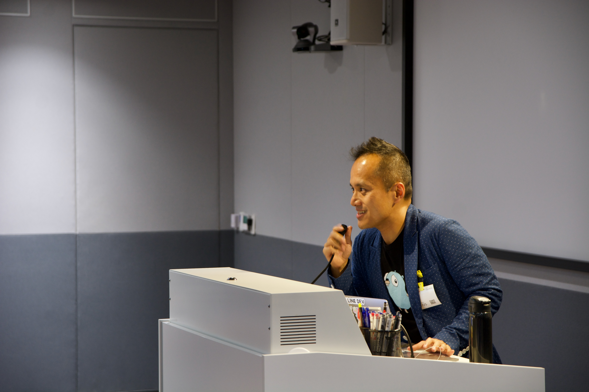
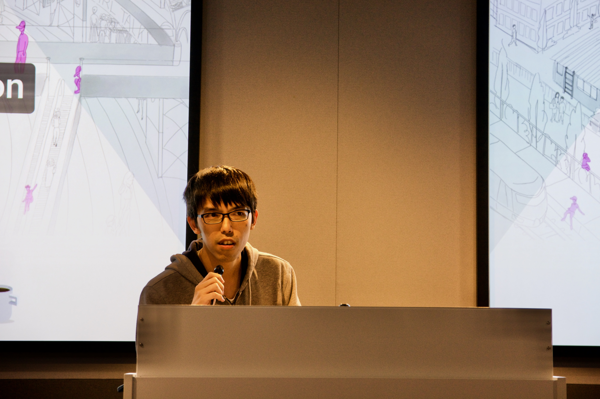
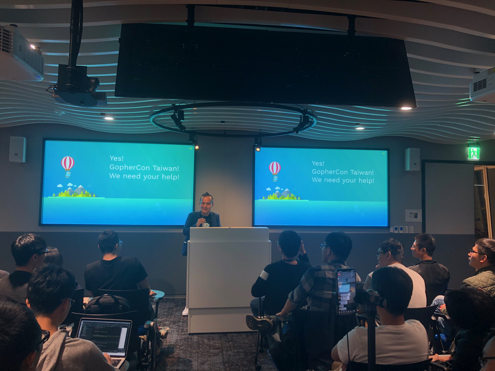

上禮拜很開心可以參加 Golang 10th anniversary 的聚會，身為這次聚會的 co-organizer 加上贊助商，不但要參加 Golang 官方的行前會議，還有準備訂 Pizza 加上當講者，要做的事情真的是蠻多的，然後 Pizza 訂太少，讓晚來的同學沒有吃到，真的是蠻抱歉的，下次還有機會訂 Pizza 就知道該怎麼辦了。

這次聚會相關資料如下，之後有興趣參加的人可以先加 meetup 帳號:
- 社群 Golang Taipei Gathering： https://www.meetup.com/golang-taipei-meetup
- 本次活動網頁: 活動網址
How I become Go GDE

十週年聚會一開始就是 Golang 社群的扛霸子 Evan 大大主講，然後給的題目我覺得真的很適合十週年聚會，告訴大家了 Golang 這十年來的發展，還有 Evan 為什麼會接觸 Golang ，而其實我會學習 Golang 其實或多或少跟 Evan 也有關係，大概也是五年前，看到 Evan 在開 MIT 6.824 的讀書會時，所使用到的語言，接下來也是越來越多 infra 相關的 tool，像是 etcd, docker, k8s, terraform 等等都是用 Golang 開發的，讓我也對這個語言有了很大的興趣。
然後 Evan 也分享了他的學習過程與方法，寫部落格和分享大概是我從 Evan 身上學到最多的東西，雖然值和量還遠遠不及啊（抱頭），但是真的透過分享和寫作，可以把自己不熟悉的地方重複思考，因為真的是很怕講錯或是寫錯，這樣一來就有機會窺探自己的盲點。
投影片:
Understanding real world concurrency bugs in go

我給的 talk 主要是想跟大家聊聊一篇論文 的內容，他將 Golang 裡面的 bugs 分為 blocking & non-blocking 兩種，並且給出結論是， Golang 的語法或是 practice ，不一定比傳統 mutex 的方式少 blocking 的 bugs，而在 non-blocking 的 bugs 上面，的確會少許多，並且給出了一些真實世界的範例，而這些範例都出自於很熱門的 open source project 像是 Docker, Kubernetes, etcd ，其實我對於讀那些 Bugs 比較有興趣，可以看到有些其實是不熟 Golang 語法而產生的，而這些 Bugs，又是在一般情況下，不太容易被走到的 path，從這些 Bugs 中，我們可以學習到很多有可能會犯錯的場景，相關的內容可以看我的投影片或是到論文的 GitHub repo 找，很推薦大家去讀。
投影片:
小結
Golang meetup 也辦到第 45 場了，而且這次還上了 meetup Twitter 的推，感覺真的是蠻棒的，希望台灣有越來越多寫 Golang 的人和公司，然後透過社群來一起學習，另外真心期望明年能夠把 GopherCon 辦成，接下來會更專心的來找贊助的機會，希望大家能多多支持摟。
